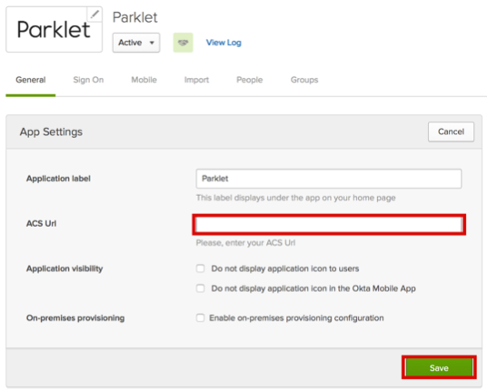

Send an email to the Parklet customer success team and request that they enable SAML 2.0 for your account.
Provide them with the following information:
SAML Fingerprint: Copy and paste the following:
Sign into the Okta Admin Dashboard to generate this variable.
SSO URL: Copy and paste the following:
Sign into the Okta Admin Dashboard to generate this variable.
IDP Issuer/Entity ID: Copy and paste the following:
Sign into the Okta Admin Dashboard to generate this variable.
Parklet will provide you with a SAML Consume URL. Enter this value in the ACS Url field on the General tab of the Parklet app in Okta, as shown below:

Done!
Notes:
SP-initiated flows and IdP-initiated flows are supported.
Just In Time (JIT) provisioning is not supported.
To test SP-initiated flows, use the ACS Url provided by the Parklet customer success team.